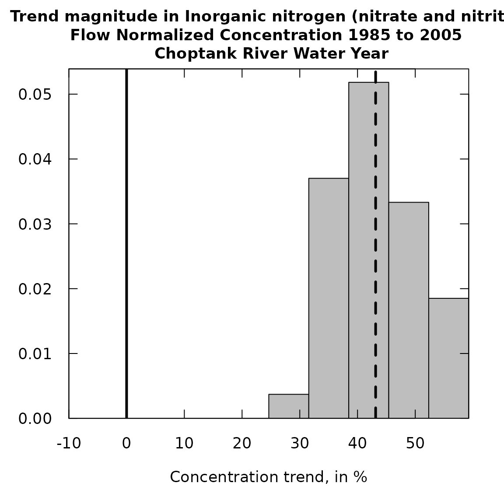
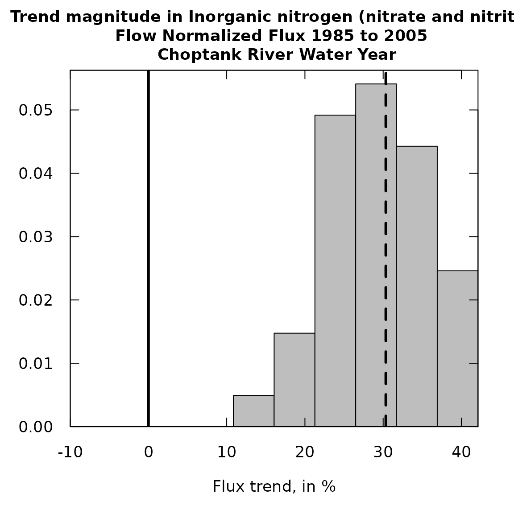
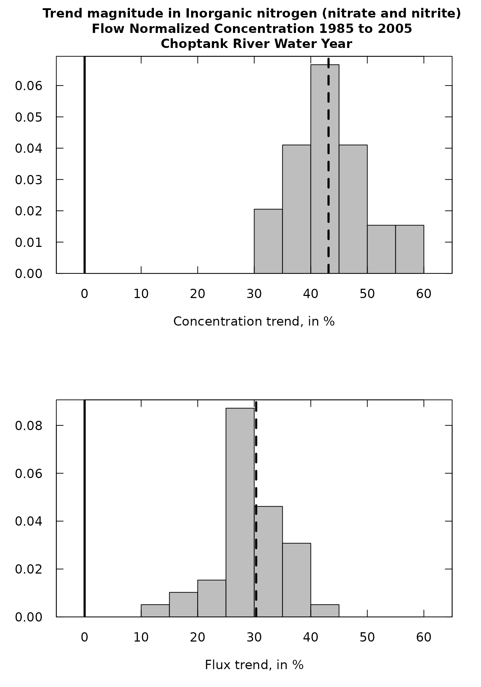
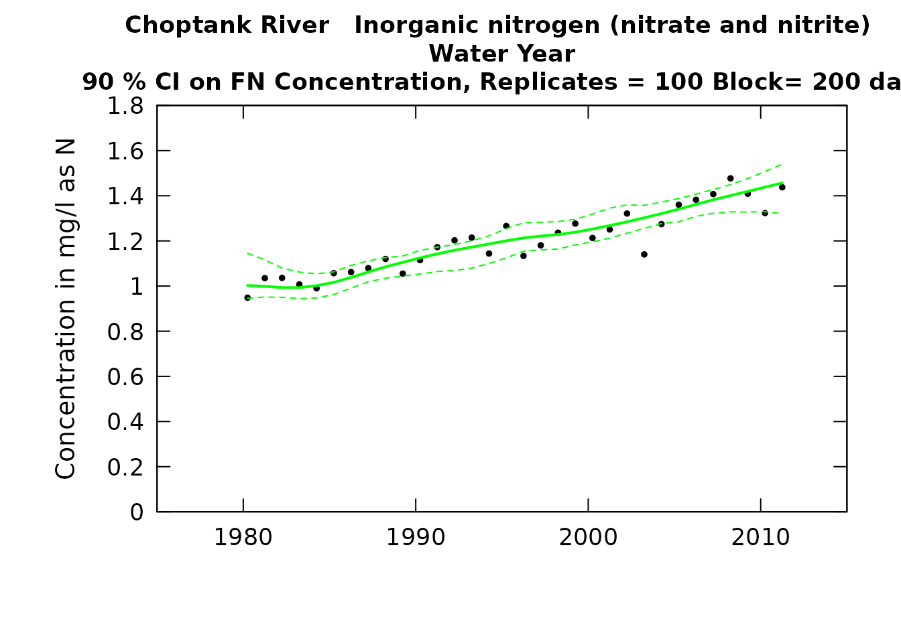
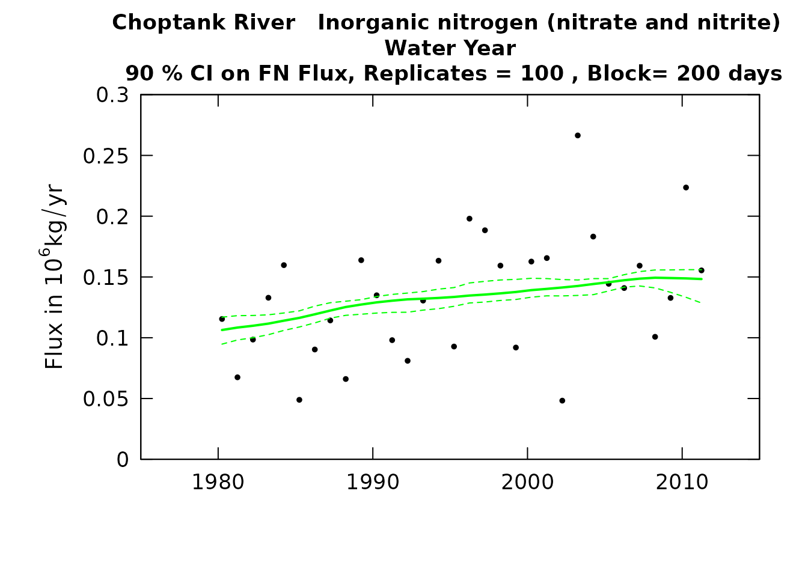

vignettes/EGRETci.Rmd
EGRETci.RmdThis package EGRETci implements a set of approaches to the analysis of uncertainty associated with WRTDS trend analysis as implemented in the EGRET package. The various functions included here are all discussed in the A bootstrap method for estimating uncertainty of water quality trends Hirsch, Archfield, and De Cicco, 2015
The EGRETci package is designed for interactive or batch use. Instructions for both are included here in the vignette. The package allows users to set the Period of Analysis, and various smoothing parameters for WRTDS. Users should consult the EGRET vignette for more background on those issues. For more extensive documentation refer to EGRETci
The EGRETci package is designed to carry out four types of tasks.
Evaluate a water quality trend over a specific span of years and produce a variety of tabular results. This is done with a short workflow involving the functions: trendSetUp and wBT. The results come in three forms: 1) console output, which shows the bootstrap replicate process as it is underway and the results when it has finished, 2) a text file that shows the results of the bootstrap analysis (a subset of what is included in the console output), and 3) a set of outputs in a named list called eBoot. The contents of eBoot are described below.
Plot histograms of values for the trend magnitudes, expressed in percent change over the specified period, for flow-normalized concentration and flow-normalized flux. This is done with the function plotHistogramTrend. It depends on outputs contained in eBoot. Note that there are a number of custom outputs similar to these histograms that can be developed from the contents of eBoot (for example, what is the likelihood that the flow normalized flux decreased by more than 2000 kg/year over the trend period). Such analyses would require a small amount of script writing by the user.
Plot confidence bands around the computed trends in flow-normalized concentration and flow-normalized flux. This is done using a function called ciCalculations and then, using the output from that function running two functions that produce the confidence band graphics for concentration and flux respectively (plotConcHistBoot, and plotFluxHistBoot).
Create prediction intervals around estimated concentration or flux values for specific days, months, or years. The estimates of interest here are the WRTDS_K. A detailed description of how these estimates can be made is provided in the vignette on WRTDS Kalman Prediction Intervals.
The following table provides definitions of the four data frames that constitute the named list eBoot
| Data Frame | Column | Definition |
|---|---|---|
| bootOut | rejectC | Reject Ho, (no trend in concentration), TRUE or FALSE |
| pValC | two-sided p-value for no trend in concentration | |
| estC | standard WRTDS estimate of change from starting year to ending year in mg/L | |
| lowC90 | Lower confidence limit (90%) on concentration trend | |
| upC90 | Upper confidence limit (90%) on concentration trend | |
| lowC50 | Lower confidence limit (50%) on concentration trend | |
| upC50 | Upper confidence limit (50%) on concentration trend | |
| lowC95 | Lower confidence limit (95%) on concentration trend | |
| upC95 | Upper confidence limit (95%) on concentration trend | |
| likeCUp | Likelihood that trend in concentration is upwards | |
| likeCDown | Likelihood that trend in concentration is downwards | |
| rejectF | Reject Ho, (no trend in flux), TRUE or FALSE | |
| pValF | two-sided p-value for no trend in flux | |
| estF | estimate of change from starting year to ending year, in 106 kg/yr | |
| lowF90 | Lower confidence limit (90%) on flux trend | |
| upF90 | Upper confidence limit (90%) on flux trend | |
| lowF50 | Lower confidence limit (50%) on flux trend | |
| upF50 | Upper confidence limit (50%) on flux trend | |
| lowF95 | Lower confidence limit (95%) on flux trend | |
| upF95 | Upper confidence limit (95%) on flux trend | |
| likeFUp | Likelihood that trend in flux is upwards | |
| likeFDown | Likelihood that trend in flux is downwards | |
| baseConc | Estimated mean flow-normalized concentration for first year, in mg/L | |
| baseFlux | Estimated mean flow-normalized flux for start year, in 106 kg/yr | |
| iBoot | The actual number of bootstrap replicates used | |
| wordsOut | a vector of four character variables (self explanatory) | |
| xConc | a vector of length iBoot, of the change in flow normalized concentration computed by each bootstrap replicate (mg/L) | |
| xFlux | a vector of length iBoot, of the change in flow normalized flux computed by each bootstrap replicate (106 kg/yr) | |
| pConc | a vector of length iBoot, of the change in flow normalized concentration computed from each bootstrap replicate expressed as % change | |
| pFlux | a vector of length iBoot, of the change in flow normalized flux computed from each bootstrap replicate expressed as % change |
There is also a data frame called caseSetUp (created with the trendSetUp function), which contains a number of important parameters that define the way that the test was implemented. They are presented here.
| Column | Definition |
|---|---|
| year1 | the water year that is the start of the trend period (an integer) |
| yearData1 | the water year that is the start of the data set (an integer) |
| year2 | the water year that is the end of the trend period (an integer) |
| yearData2 | the water year that is the end of the data set (an integer) |
| numSamples | number of samples in eList$Sample |
| nBoot | maximum number of replicates (called Mmax in paper) |
| bootBreak | minimum number of replicates (called Mmin in paper) |
| blockLength | length of blocks for bootstrap (called B in the paper) |
| confStop | 1 - alphap, the width of the confidence interval used in adaptive stopping rule (default alphap=0.3 so confStop=0.7) |
The WBT (WRTDS Bootstrap Test) can be run interactively or in batch.
Regardless of which approach is used, if the user wishes to use any non-default values of the parameters for model estimation or period of analysis these need to be set up before running the code. For example:
If the period of analysis is to be anything other than a Water Year (paStart=10, paLong=12), the user must use the setPA function. For example if we want to do the analysis for the three months starting with April, the command would be eList <- setPA(eList, paStart = 4, paLong = 3).
If the desired value of windowY was 10 rather than the default value of 7, then the command needed would be eList$INFO$windowY <- 10, similar commands can be used for windowQ, windowS, minNumObs, minNumUncen and edgeAdjust (see help page for modelEstimation in the EGRET package).
Once all of the parameters have been set (which requires no action by the user if the defaults are to be used) the set of commands for interactive processing would be this (using the example data set Choptank_eList):
library(EGRET)
library(EGRETci)
eList <- Choptank_eList
#Interactive function to set up trend analysis:
caseSetUp <- trendSetUp(eList)
eBoot <- wBT(eList,caseSetUp,
fileName = "outputText.txt")
#Interactive save output function:
saveEGRETci(eList, eBoot, caseSetUp)Two sets of outputs are created, a text file which documents the results of the WBT, and an RData file (created by the saveEGRETci function) that saves the relevant results as data frames for use in the plotHistogramTrend function (described below) or other user-specified post-processing functions.
The output in outputText.txt looks like this:
Choptank River Inorganic nitrogen (nitrate and nitrite)
Water Year
Bootstrap process, for change from Water Year 1985 to Water Year 2010
data set runs from Water Year 1980 to Water Year 2011
Bootstrap block length in days 200
bootBreak is 39 confStop is 0.7
WRTDS estimated concentration change is 0.444 mg/L
WRTDS estimated flux change is 0.03593 10^6 kg/yr
Should we reject Ho that Flow Normalized Concentration Trend = 0 ? Reject Ho
best estimate is 0.444 mg/L
Lower and Upper 90% CIs 0.308 0.506
also 95% CIs 0.201 0.512
and 50% CIs 0.397 0.472
approximate two-sided p-value for Conc 0.05
* Note p-value should be considered to be < stated value
Likelihood that Flow Normalized Concentration is trending up = 0.988 is trending down = 0.0125
Should we reject Ho that Flow Normalized Flux Trend = 0 ? Reject Ho
best estimate is 0.03593 10^6 kg/year
Lower and Upper 90% CIs 0.0211 0.0452
also 95% CIs 0.0197 0.0456
and 50% CIs 0.0309 0.0390
approximate two-sided p-value for Flux 0.05
* Note p-value should be considered to be < stated value
Likelihood that Flow Normalized Flux is trending up = 0.988 is trending down= 0.0125
Upward trend in concentration is highly likely
Upward trend in flux is highly likely
Downward trend in concentration is highly unlikely
Downward trend in flux is highly unlikelyTo run the wBT in batch mode the only difference from this script is that the call to trendSetUp should include all the needed bootstrap parameters. So, let’s assume that we want use the example data set Choptank_eList and have a PA of December, January, February and March, that we wanted to set windowY = 10 and minNumObs = 50, and all other smoothing parameters at their default values. And we want to run the trend analysis for 1990 to 2012, use a maximum of 50 replicates, a minimum of 39 replicates, and a block length of 200. The script would be:
library(EGRET)
library(EGRETci)
eList <- Choptank_eList
eList <- setPA(eList, paStart = 12, paLong = 4)
eList$INFO$windowY <- 10
eList$INFO$minNumObs <- 50
caseSetUp <- trendSetUp(eList,
year1=1990,
year2=2012,
nBoot = 50,
bootBreak = 39,
blockLength = 200)
eBoot <- wBT(eList, caseSetUp, fileName ="outputText.txt")
saveEGRETci(eList, eBoot, caseSetUp, fileName = "output")This will result in the creation of the text file called outputText.txt, and an RData file called output.RData. The RData file will contain the objects caseSetUp, bootOut, wordsOut, xConc, xFlux, and INFO. Both files will be located in the working directory.
The function plotHistogramTrend plots a histogram of all of the trend magnitudes (expressed in percentage change over the selected period) from the full set of replicates created by wBT. These magnitudes are stored in the eBoot list. These histograms serve the purpose of providing a graphical impression of the central tendency and the uncertainty about the size of a trend. They can be used to help answer questions like: “How sure are we that the trend is positive?” or “How sure are we that the decrease is at least a 20% decrease over the period of interest?” The plotHistogramTrend function can produce histograms either for Flow Normalized Concentration or for Flow Normalized Flux.
When creating a histogram it is important to carefully determine what “bins” to use. In this plot it is a good idea to make sure that the plot covers a range of both negative and positive values even though it might be the case that the entire range of the trend magnitudes is positive (or negative). The function is set up so that it defaults to setting up 10 bins and the bins are set to cover the full range of the magnitudes and at least cover magnitudes as low as -10% and as high as +10%. The bins are set up based on a minimum value (xMin), a maximum value (xMax), and a step size (xStep). The defaults used in an initial run can simply leave out these three arguments and will produce a plot. This first plot would not be suitable for publication or display, but is intended to guide the analyst to set these three arguments to produce a suitable plot.
Ultimately we want a plot with these characteristics: The value of xStep should be an integer such as 5, 10, or 20 so the width of the bins is 5%, 10% or 20%. xStep should be small enough so that the histogram looks relatively smooth. If it is too small the histogram bars will tend to be irregular. xStep should not be so large that there is poor resolution of the shape of the distribution. If a very smooth histogram is desired then the analyst needs to have run the wBT function with a high number of replicates (say nBoot = 200). The value of xStep should be less than the minimum value observed in the set of bootstrap replicates. xMin should be some negative integer multiple of step size. If no values were negative, then setting it at -1 times xStep would be a good choice. xMax should be larger than the maximum value in the set of bootstrap replicates and should be some positive integer multiple of xStep. If there are no positive values then 1 times xStep would be a good choice.
Note that the plots always show a vertical solid line at 0% trend, simply as a point of reference for the “no trend” result. They also show a dashed vertical line at the value of the ordinary WRTDS estimate of the trend magnitude in percent. This vertical line fall near the median value for all the bootstrap replicates.
This initial run will give the analyst the basic information needed to set up a good set of values for xMin, xMax and xStep.
library(EGRET)
library(EGRETci)
# Example data included in package:
eList <- Choptank_eList # Example data from EGRET package
eBoot <- Choptank_eBoot
caseSetUp <- Choptank_caseSetUp
#Concentration an initial run:
plotHistogramTrend(eList, eBoot, caseSetUp,
flux=FALSE)
#Flux an initial run:
plotHistogramTrend(eList, eBoot, caseSetUp,
flux=TRUE)
Having seen these initial versions of the plot one can run the functions again with a set of arguments that will produce a plot that is suitable for presentation or publication.
Alternatively, the two plots can be shown side-by-side using a workflow. Use the par function to set up both functions to plot side-by-side:
par(mfrow=c(1,2))
#Concentration, presentation version:
plotHistogramTrend(eList, eBoot, caseSetUp,
flux=FALSE, xMin = -5, xMax = 65, xStep = 5)
#Flux, presentation version:
plotHistogramTrend(eList, eBoot, caseSetUp,
flux=TRUE, xMin = -5, xMax = 55, xStep = 5)Or:
par(mfrow=c(2,1))
#Concentration, presentation version:
plotHistogramTrend(eList, eBoot, caseSetUp,
flux=FALSE, xMin = -5, xMax = 65, xStep = 5)
#Flux, presentation version:
plotHistogramTrend(eList, eBoot, caseSetUp,
flux=TRUE, xMin = -5, xMax = 65, xStep = 5,
printTitle = FALSE)
The purpose here is to produce a graphic that looks just like those produced by plotConcHist or plotFluxHist but with the addition of confidence bands around the flow-normalized histories. There are two versions of the workflow for confidence bands, the first just uses a single computer core which means it takes a long time to run (jobs can take an hour or more), but it is simple to run. It uses the function ciCalculations and can be run interactively or in batch. Two scripts for that are provided below. It is best done in the Terminal or some other window, rather than in the console. If run in the console it will make it impossible for other work in R to take place while the job is running. The second way it can be done is using parallel computing in R. A script for that purpose is provided. It does require three extra packages be installed (foreach, doParallel, and iterators). It is also best to run this in the Terminal, because if it is run in the console, no other R work can be done while it is running.
Regardless of the approach (single core or parallel) being taken to the computations, the user needs to set up any non-default values of the parameters for model estimation and period of analysis. For example:
If the period of analysis is to be anything other than a Water Year (paStart=10, paLong=12), the user must use the setPA function. For example if we want to do the analysis for the three months starting with April, the command would be eList <- setPA(eList, paStart = 4, paLong = 3).
If the desired value of windowY was 10 rather than the default value of 7, then the command needed would be eList$INFO$windowY <- 10, similar commands can be used for windowQ, windowS, minNumObs, minNumUncen and edgeAdjust (see help page for modelEstimation).
It is imperative that the standard WRTDS trend analysis be run prior to running the code for the confidence bands. If the user has made changes in smoothing parameters or modified the data in any way since the last time modelEstimation was run, the standard running of modelEstimation must be done and the output saved as eList. The commands would be:
eList <- modelEstimation(eList)This example workflow assumes that we use the default values for all of the model parameters and PA and uses the example eList provided in the package. Remember, this is a very long-running process:
library(EGRET)
library(EGRETci)
eList <- Choptank_eList
CIAnnualResults <- ciCalculations(eList)
save(eList,CIAnnualResults, file="CIAnnualResults.RData")To run the ciCalculations function in batch mode, the only difference is that additional arguments are specified in the call to the function. For example the call to ciCalculations might read as follows:
CIAnnualResults <- ciCalculations(eList, nBoot = 100, blockLength = 200, widthCI = 90)As long as all required arguments (nBoot, blockLength, and widthCI) are specified there will be no interaction needed.
Taking advantage of the foreach package to do parallel computing:
library(foreach)
library(doParallel)
library(iterators)
library(EGRET)
library(EGRETci)
eList <- Choptank_eList
eList <- modelEstimation(eList)
nBoot <- 100
blockLength <- 200
coreOut <- 1 #Number of cores to leave out of processing tasks
widthCI <- 90
ciLower <- (50-(widthCI/2))/100
ciUpper <- (50+(widthCI/2))/100
probs <- c(ciLower,ciUpper)
nCores <- detectCores() - coreOut
cl <- makeCluster(nCores)
registerDoParallel(cl)
repAnnual <- foreach(n = 1:nBoot,.packages=c('EGRETci')) %dopar% {
annualResults <- bootAnnual(eList,
blockLength,
startSeed = n)
}
stopCluster(cl)
# save(repAnnual, file="repAnnual.RData")
CIAnnualResults <- ciBands(eList, repAnnual, probs)
save(eList,CIAnnualResults, file="CIAnnualResults.RData")Regardless of the way that the computations are done the outputs that are needed for the graphics are contained in eList and CIAnnualResults (which in either script will end up in a file called CIAnnualResults.RData). Once that file is loaded the graphics can be produced using the functions plotConcHistBoot and plotFluxHistBoot. Each of these functions only require two arguments (eList and CIAnnualResults). However, the user can specify a number of other arguments. These other arguments are the same ones used in the plotConcHist and plotFluxHist functions in the base EGRET package.
The user can also view a table of the confidence interval values shown in these graphics simply by using the command CIAnnualResults (fluxes will be in units if kg/day).
Here is a script for producing these graphics, using the example eList and CIAnnualResults data frames included in the package.
eList <- Choptank_eList
CIAnnualResults <- Choptank_CIAnnualResults
plotConcHistBoot(eList, CIAnnualResults)
plotFluxHistBoot(eList, CIAnnualResults)